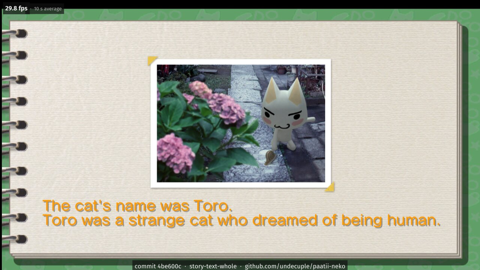
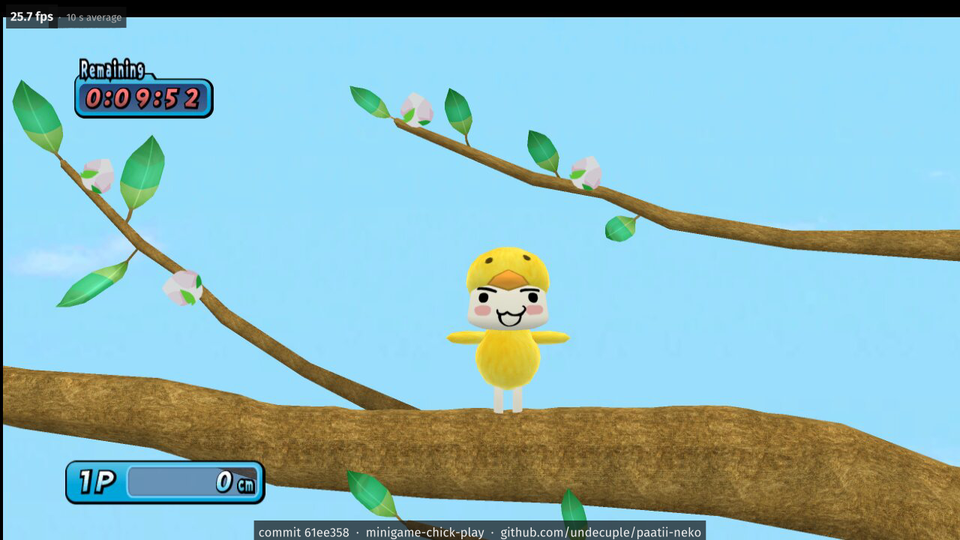

Status
Latest
No release yet: the port is built from source. The Story mode plays by hand into episode 2 at about 29 frames/s in its room scene (target 30), and the first minigame plays a full round; the other minigames and sound are unchecked. Details: docs/STATUS.md; what a release must meet to be called playable: docs/RELEASE-CRITERIA.md.
As of 2026-11-03, on Windows x64 under Proton on Linux (Intel Core i7-12700KF, NVIDIA GeForce RTX 4060, driver 595.112.07, GE-Proton11-7), tested with scripted keyboard input and hand play. Not yet run on real Windows.
- Boot, intro, menus
- Studio logos, the title screen with its 3D background, and the main menu. Text needs the PS3 system fonts from your own console's firmware.
- Story mode
- The memory book, the real-time 3D room scene and the start of episode 2, played by hand.
- Minigames
- Game mode opens; the first minigame, Flap your wings! Chick!, plays a full round to its score screen. The others have not been played yet.
- Input
- Keyboard, with the game's original controls, and pads through SDL3: a DualShock 4 was played by hand (2026-10-21), other pads are untested. On a pad without a motion sensor, or on the keyboard, the right stick stands in for motion; the minigame above scores with it.
- Saves
- The game writes its save. Loading it after a restart has not been checked.
- Sound
- Not checked (test runs have audio off).
- Online
- Not supported. See PRIVACY.md.
- Installer and portable zip
- None yet: the port is built from source.
- Performance
- Shaders are cached on disk (in
scratch/); stalls have not been measured. - Speed
- Title screen 26.8 frames per second on average and the room scene 28.9 (the game's own rate is 30), over a 14 s and a 45 s window, on a build of the development tree of 2026-11-02 on the hardware above. Book and minigame not measured on that build.
- Known bugs
- Some menu labels and titles are cut off; paging back and forth in the Story book can overlap the text with the page images, and an episode may not reopen after paging. All of them: KNOWN_ISSUES.md.
Feature by feature (24 features of the PS3 game): Works 8 Partial 9 Not yet verified 3 Not yet 4 FEATURES.md.




Game imagery © Sony Interactive Entertainment. Screenshots of the port running the developer's own copy, kept to document progress: all of them. More: STATUS.md, known issues, what a release must meet.
What goes online
Not checked yet. The game has online features, and the port includes ps3recomp's network layer (real sockets and HTTP), so it may try to connect. Every test run so far had no network access. None of the game's online features are supported, and the port has no update check, crash reporting or other online feature of its own. Until this is checked, run the port without network access if that matters to you.
Where your data goes
Everything the port writes goes into the folder it runs from:
gamedata/: the PS3 hard-disk area the game sees, saves included.cache/: decrypted game data files, made from your own disc as they are read.scratch/: the shader cache and timing logs.
Test runs found nothing written anywhere else by the port itself; the graphics driver may keep its own shader cache. To remove the port, delete that folder.
Getting it
There is no release, installer or download yet. An installer that builds the port on your PC is planned before the first release; until then you build it yourself.
The game
- Your own disc of TORO ! Let's Party !: BCAS20087, version 01.00 (the Asian English release), as a folder that holds
PS3_GAME. Other regions, including the Japanese original BCJS30034, are not what the port is built for. - The game's main program, decrypted from your own copy, as
EBOOT.elf. This project gives no decryption tools or instructions; see the PS3 emulator RPCS3 and its documentation. - The PS3 system fonts (
SCE-PS3-*.TTF) from your own console's firmware, for the game's text.
Which file goes where: GETTING-FILES.md.
To build
- Linux with Nix: the flake provides the MinGW-w64 cross toolchain and every other tool.
- 16 GB of RAM or more (the lifted code compiles in 64 chunks of roughly 1 to 2 GB each) and tens of GB of free disk. Steps: BUILDING.md.
To run
- Windows x64 with a Direct3D 12 GPU, or Linux with Proton.
- Tested setup: Intel Core i7-12700KF, NVIDIA GeForce RTX 4060 (driver 595.112.07), GE-Proton11-7. Real Windows has not been tried yet. No minimum or recommended hardware is known yet.
What each must contain and where it goes: docs/GETTING-FILES.md; hardware and the rest: docs/requirements.md. This project ships none of them and gives no decryption steps.
Build steps: BUILDING.md. Found a problem? Use the issue forms after reading the known issues.
How it works
TORO ! Let's Party ! runs on the PS3's Cell processor: one PowerPC core (the PPU) runs the game, SPU co-processors run jobs, and the RSX GPU draws. The port translates the game's PPU and SPU code to C ahead of time, compiles it into a Windows x64 program, and links it against a runtime that answers the PS3 system calls and libraries on the PC. No CPU emulator runs at play time. The GPU side is still reproduced by the runtime (see Graphics below).
- PPU game code: translated ahead of time to C, then compiled for x64
- SPU programs and jobs: translated ahead of time the same way; the runtime reproduces the SPURS job scheduling and DMA
- Graphics: translated at run time: the game's RSX command stream is replayed on Direct3D 12
- System libraries: reimplemented on PC APIs by the runtime
- Input: SDL3 for pads, plus the keyboard
More: HOW-IT-WORKS.md.
Roadmap
To do
In order of priority. No dates: each step is done when it is checked in a run.
- Minigames: the remaining minigames, one by one, with the game's original controls, each played to its score screen.
- Sound and saves: music and effects checked by ear; a save loaded again after a restart.
- Speed: the game's own 30 frames per second in every mode, measured with the hardware and build named.
- Windows: a test on real Windows, then an installer that builds the port on the player's PC.
- Later: a native Linux build (Vulkan), and optional display features such as an upscaler.
Any gameplay change stays optional. What a release must meet: RELEASE-CRITERIA.md.
Links and friends
- ps3recomp: the recompiler and runtime this port is built on (MIT).
- RPCS3: the reference for how the game should look and behave (read, never copied).
- Project Helghast (Killzone 3) and Project Pyrrhus (Killzone 2): PS3 games ported to PC the same way, by the same author.
- This project's repository, its issues and its changelog.
Official channels
パーティー猫！ is made by undecuple: GitHub @undecuple. Builds and fixes come only from this repository; we never ask anyone to paste a command into PowerShell or a terminal, or to run a file from someone else. Anyone else offering builds, "fixes" or donations in this project's name is not us.
How it was made
This project is developed by one person with AI coding agents, with the maintainer reviewing and signing off their work: docs/AI.md.
Licence and credits
The port's own code, tools and documentation are MIT. The licence covers nothing of the game itself. Third-party components and credits: NOTICE.md; full licence texts: licenses/.
パーティー猫！ ("party cat!") is this port's name, not the game's. It is a fan project, not official and not affiliated with or endorsed by Sony Interactive Entertainment or the game's makers and publishers.
You need your own copy of the game. This repository contains only the port: source code, patches to the recompiler, tools and documentation. It contains no game code, data, assets, keys or firmware, and it never will. TORO ! Let's Party ! is © Sony Interactive Entertainment.
Game imagery © Sony Interactive Entertainment.
This page's style, a scrapbook of paper, tape and ink, is adapted from Project Helghast by undecuple, MIT.
Fonts: Lilita One, Baloo 2, Caveat and M PLUS Rounded 1c, under the SIL Open Font License 1.1 (texts), shipped as subsets with this page. Nothing is loaded from any other site, and the page has no script, cookie or counter.